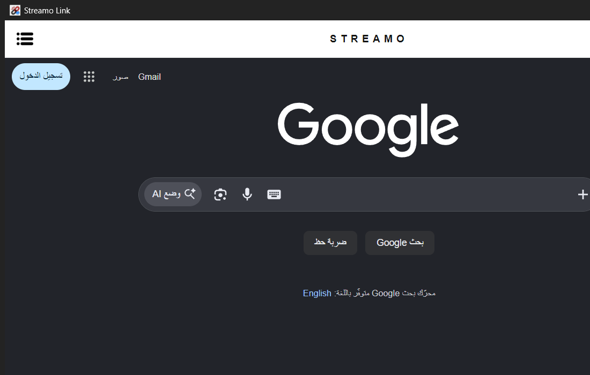
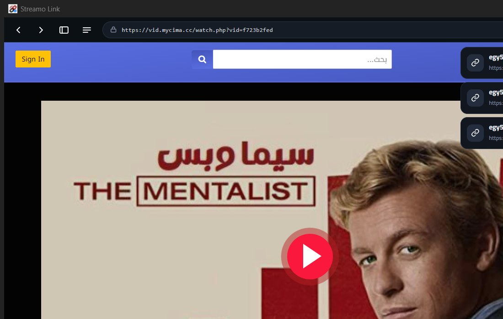

Built-in browser
Search and open watching websites right inside the app — no other apps needed.
Streamo extracts the direct link of any movie or series from watching websites — play it anywhere with no ads, or share it with friends in perfect sync on Live Cinema.
Portable · no installation · official builds on GitHub Releases

From searching for the movie to pressing play — Streamo covers the whole journey: opening the site, capturing the link, testing it, playing it and sharing it.
Search and open watching websites right inside the app — no other apps needed.
The direct link of the movie is captured automatically from any server you play.
Streamo tests the extracted link and tells you instantly: works or failed.
Every link you extract is saved in one place — revisit any of them anytime.
Watch right inside Streamo — or open the link in Chrome or any player you like.
Since you watch outside the watching website, not a single ad interrupts you.
The same exact experience on both — same look, same steps, same flow.
73 MB portable EXE for Windows — no install. A 4.4 MB APK for Android.
The steps are identical on Windows and Android. Follow them once — they stay easy forever.
Type مشاهدة فيلم <name> اونلاين or مشاهدة مسلسل <name> اونلاين in the app. You can add a website name at the end, or leave it out.
Choose any site from the results — Top Cinema, Cinema La Rosa, or any other watching website.
Choose the movie or episode you want and press Play, just like you would normally.
Open each server on the page and start the video, as if you were going to watch it normally.
When the video starts, a floating window appears on the right with the extracted link — tested automatically.
Tap it, or open the Extracted Links icon: play in the built-in player · open in Chrome · refresh when it expires.
| Result | What to do |
|---|---|
| No link appears | Switch to another server or website |
| Link appears but the test failed | Switch to another server or website |
| Link appears and the test passed | Tap it, or open the Extracted Links icon |
Every extracted link expires after a while — that's normal. Open Extracted Links and tap Refresh to renew it, or extract a new one.

Open Streamo, type the query, pick any result — Streamo handles the rest. Copy the ready-made search strings:
You can add a website name at the end of the query — or leave it out, results work either way.
مشاهدة فيلم <movie> اونلاينمشاهدة مسلسل <series> اونلاينمشاهدة فيلم <name> اونلاين top cinemaLive Cinema is a free, browser-based platform for synchronized group viewing. Create a watching room, share the link, and everyone watches the same second of the movie at the same time — with live chat, and no sign-up required.
Watching movies with friends online always had one problem: everyone ends up on a different second, and it never feels like watching together. Live Cinema recreates the "let's go to the cinema" experience entirely online — everyone sees the same moment, talks, laughs and reacts together, and any change in the player (play, pause, seek, restart) is instantly applied to everyone, according to the room's permissions.
Streamo is the bridge between the two worlds: extract the direct link from watching websites, drop it into a Live Cinema room, and share the room link with anyone — you all watch the same second, together, with no ads.Idea & execution — X5Coder
Everyone watches the same second — play, pause, seek and restarting from the beginning are applied to all, instantly.
No account, no email, no password — your identity and data are kept automatically on your device, even across visits.
Messages, emojis, replies, edit, delete, copy and read receipts — WhatsApp/Telegram-style, inside the viewing room.
The room owner decides who controls the player: everyone, admins only, or the owner only — applied to all instantly.
Open rooms for everyone, or private ones with a numeric password (4–6 digits) — you decide who gets in.
The owner can swap the link anytime — everyone switches to the new movie from the beginning, same room, no new link.
A welcome notification greets everyone who enters (rules, instructions, message) + a pinned announcement visible to all.
A counter above the chat icon and a glowing green dot — plus double-click any avatar to ping that specific viewer.
Edit all room data, assign/remove admins, control chat & player access, ban or kick anyone, or delete the room permanently.
MP4, HLS (.m3u8) or token/temporary links — one rule: if it plays in Chrome, it plays on Live Cinema.
A tool that extracts the direct link of any movie or series from watching websites — so you can play it in any player or browser with no ads, or share it with friends in perfect sync on Live Cinema.
Yes — completely free on Windows and Android. No subscriptions, no paid tier, no locked features.
No, never. Streamo doesn't host or relay content — it only extracts links from websites you choose to visit. You are responsible for how you use those links and for respecting intellectual-property rights.
Every direct link expires after a while — that's the nature of temporary, token-based links. Simple fix: open Extracted Links and tap Refresh to renew it, or extract a new one from the same source.
Try another server on the same page, or another watching website from the results, and try again. The rule: a passing test = a link that plays — in any player, and on Live Cinema.
No — on either. No sign-up, no email, no password, ever. On Live Cinema, your identity and data are kept automatically on your device — even if you leave and come back, you return as the same persona with the same data.
Any direct link that plays inside Google Chrome: MP4, HLS (.m3u8), or token/temporary links. Plain watching-page links won't work — the steps here will get you a working one.
Version 2.0.1 for every platform — official builds and checksums live on GitHub Releases only.
Portable · no installation · 73 MB
APK · 4.4 MB · allow installs from unknown sources
Streamo does not host any content — it only extracts links from websites you choose to visit. You are responsible for how you use it. Official builds are published on GitHub Releases only.